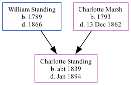

Charlotte Ann Standing c1839 - 1894
[ Home ] | [ Calendar ] | [ Surnames Index ] | [ Family History ]The child of William Standing (an agricultural laborer) and Charlotte Marsh, Charlotte Standing, the first cousin four-times-removed on the father's side of <a href="I1.html">Nigel Horne</a>, was born in Folkestone, Kent, England <i>c.</i> 1839<span class="citation">1</span>.</p><p>Throughout her life, she lived at her birthplace in 1851<span class="citation">1</span>; and on Dover Road, Elham, Kent, England on Mar 30, 1851<span class="citation">2</span>. <p>She died in Jan 1894 in Kent.
Parents
- William was born in 1789
- Charlotte was born in 1793
Citations
- 1851 England Census Online publication - Provo, UT, USA: The Generations Network, Inc., 2005.Original data - Census Returns of England and Wales, 1851. Kew, Surrey, England: The National Archives of the UK (TNA): Public Record Office (PRO), 1851. Data imaged from the National (Relation to Head of House: Daughter)
- 1851 England, Wales & Scotland Census - Findmypast (was age 12 and the daughter of the head of the household)
Family Tree
Generated by Ged2Site. Last updated on Jul 20, 2025